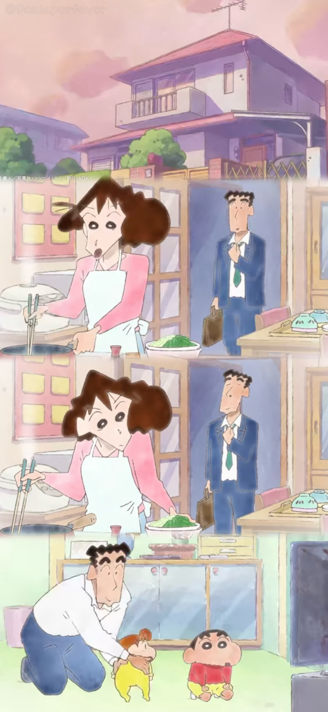
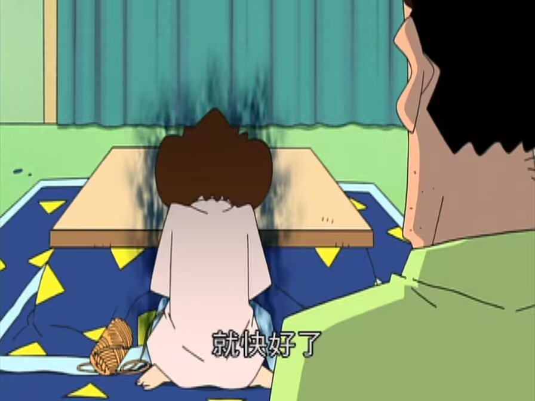
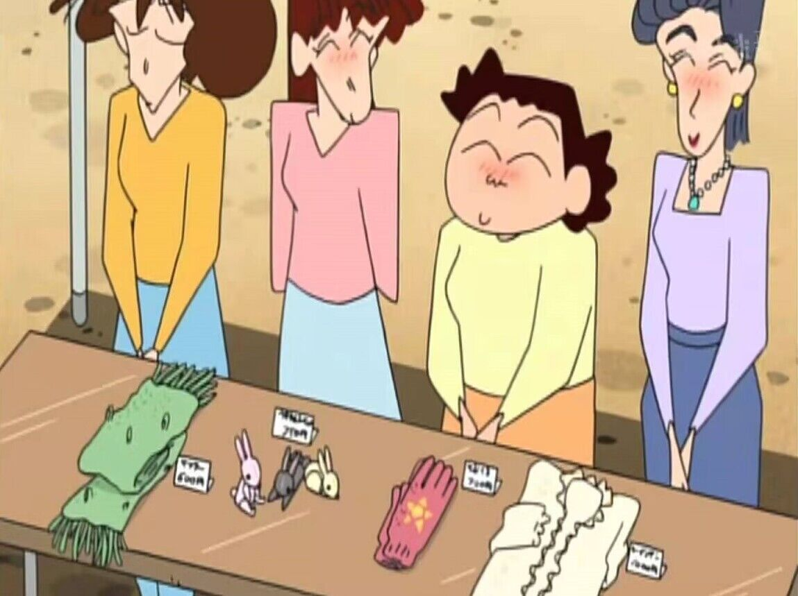

美伢和广志，有太多的缺点。
美伢有时候会偷懒、虚荣还爱耍小脾气；广志总是贪酒、没耐心，还有点好色。
两个人的日常就是吵架拌嘴，互相生气。
他们从不说爱，却总是默默为彼此付出。

有一天，小新的幼稚园要举行义卖会，要求家长们自己动手做一件礼物去义卖。
美伢准备织一条围巾。
第一次织围巾的美伢，进度缓慢，常常熬到深夜。
织围巾的任务终于完成，成品却松松垮垮，不够精致。

义卖会上，别的家长的礼物都卖出去了，只有美伢丑丑的围巾没有人买。
尴尬的她只能以去买热饮为理由，逃离窘境。
买完热饮回来，妈妈们告诉美伢，她的围巾已经卖出去了。
美伢开心极了。
第二天，广志出门的时候，拿出藏在包里的围巾围在脖子上，正是美伢织的那一条。
老婆熬夜织出来的围巾，卖相不好看，但是这世界上最温暖的礼物。